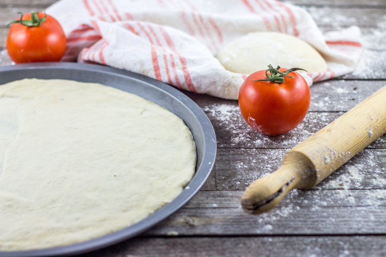

Pâte à pizza facile

Une pizza maison ça commence par la pâte alors c’est parti pour la recette d’une pâte à pizza facile! J’ai mis pas mal de temps avant de trouver « LA » recette de la pâte à pizza idéale. Pas trop épaisse, pas trop fine, pas dure après la cuisson, sans goût de levure bref tant de critères qui font que j’ai testé et retesté des recettes de pâtes à pizza jusqu’à ce que je trouve le bon équilibre. Aujourdhui je vous propose une recette de pâte à pizza facile comme chez le pizzaiolo :)! Cette pâte à pizza est très élastique alors vous pouvez avoir l’impression qu’elle revient sur elle même une fois étalée mais pas de panique « c’est normal » il suffit juste de bien l’étirer et la travailler pour qu’elle prenne une jolie forme!
Vous me direz ce que vous en avez pensé et si vous manquez d’inspiration pour les garnir je vous propose de découvrir ma recette de pizza parme roquette mozzarella figues (ICI).
Ingrédients
- Farine - 300 gr
- sel - 6 gr
- eau - 180 gr
- huile d'olive - 3 càs
- levure deshydratée - 5 gr
Instructions
- Séparer l'eau dans deux verres. (90g/90g)
- Dans un des verres ajouter la levure et laisser environ 10min de coté jusqu’à ce que la levure fasse de petites bulles.
- Pendant ce temps, mélanger la farine et le sel dans une grande jatte et faire un puit
- Verser dans le puit le mélange eau-levure, le reste d'eau puis l'huile d'olive
- Pétrir à la main (8-10min) ou avec le crochet de votre robot à basse vitesse Le pétrissage est très important car c'est ce qui va permettre d'obtenir une pâte bien homogène et élastique
- Couvrir d'un linge propre et laisser lever pendant 1h à 2h
- Séparer la pâte en 2 boules de poids égal
- Fariner et laisser lever à nouveau pendant 1h
- Fariner votre plan de travail et étaler votre pâte au rouleau en l'étirant de toutes parts
- Pour obtenir une forme bien ronde vous pouvez utiliser un moule à gâteau comme emporte-pièce
- Maintenant il ne reste plus qu'à les garnir !
- Concernant la cuisson, il faudra compter environ 20 minutes (en allant vérifier tout de même en fin de cuisson) à 180°c

Les tips de la communauté
Pâte très populaire et beaucoup de retours positifs. Lecteurs apprécient la moelleuse et la facilité. Quelques questions techniques sur les variations possibles et le mode de cuisson.
Astuces
- La pâte peut être pétrissée à la machine à pain ou à la main
- Cuire environ 20 min à 180°C en chaleur tournante
- Peut être préparée la veille et laisser lever toute la nuit au frigo
- Utiliser la totalité pour une seule grosse pizza si on préfère une pâte plus épaisse
- Multiplier les proportions par 2 permet de faire 2 grosses pizzas avec machine à pain
Variantes suggérées
- Possibilité de faire avec farine d'épeautre pour une version différente
Ajustements signalés
- La pâte devient plus fine si divisée en deux comme indiqué. Pour pâte plus épaisse, utiliser toute la pâte pour une seule pizza
- Si pâte devient dure au frigo, la sortir 10 min avant d'abaisser
- Éviter chaleur traditionnelle seule, préférer chaleur tournante pour cuisson régulière